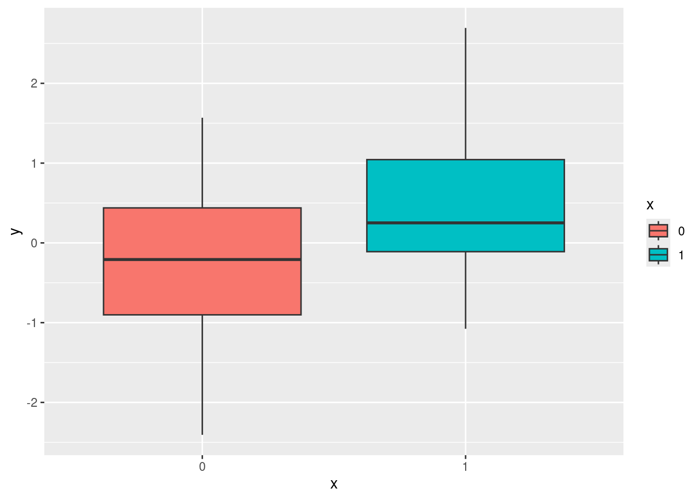
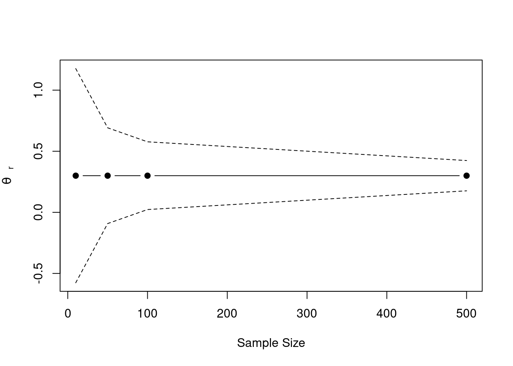

graph TD
A[Statistical Methods]
A --> B[Sign/Direction]
B --> C[Vote Counting]
A --> D[Confidence/Prediction Interval]
D --> E[CI/PI original/replication]
D --> F[Small Telescope]
A --> G[Meta-analysis]
G --> H[Equal and Random-effects]
G --> h[cumulative meta analysis]
G --> I[Q Statistics]
A --> J[Bayesian Methods]
J --> K[Replication Bayes Factor]
J --> z[Pawel model]
J --> a[Skeptical p value]
J --> b[Skeptical prior etz]
4 Statistical methods for replication assessment
Anderson & Kelley (2024) suggests that also the perspective of supporting the null hypothesis should be taken into account especially when we are really skeptical about the initial results. We want to replicate an effect to see the reliability, maybe better estimating the true effect with a larger sample (taking into account the inflation of the original effect) but we could also think that the original effect is a false positive and we want to do the replication to see if the null hypothesis is supported. The bayes factor approach by Ly et al. (2019) Verhagen & Wagenmakers (2014) is exactly about this. also equivalence testing is useful
4.1 Introduction
In the previous chapters we introduced replication from a statistical and theoretical point of view. We purposely omitted defining the outcome of a replication study to dedicate an entire chapter about this part. Similarly to the multiple definitions problem there are several statistical measures for the replication assessment. There are also multiple ways to propose a classification but we could indentify:
In addition to the multitude of methods, the field of replication measures is relatively new and keep growing proposing new metrics, simulation studies, and comparisons between methods.
A review work could be in principle the best option but this is not feasible and also useful for a very active research area. There is an amazing project proposed by Heyard et al. (2024) where an extensive systematic review is supported by an online and keep up-to-date database with all replication measures organized and classified according to a common methodology. The authors reviewed roughly 50 different measures. The database is avaliable at the following link http://rachelheyard.com/reproducibility_metrics/.
We decided to make a selection of methods from the database according to the following criteria:
- for similar methods we keep the most recent and general version. For example, if a method \(x\) originally developed for one-to-one replication designs has been extended to cover also one-to-many designs we will present the latter.
- we select both bayesian and frequentist methods
- we selected methods more related to inference and also methods more focused on estimation of the effect size
- we selected methods that are not linked to a specific research area or topic. For example in the database there are methods for voxels in fMRI research or methods for metrology.
An important point is related to the choice of the method when evaluating a replication result. The Heyard et al. (2024) work shows the amount of different methods and definitions of replication success without formally comparing them. This is not a problematic aspect because in practice, large scale replication projects such as the used different methods for the same dataset. In this context is important clearly use the method, and the related replication definition, closest to our aim.
4.2 Methods
- Bayes Factor: Equality-of-effect-size BF test
- Bayes Factor: Fixed-effect meta-analysis BF Test (Meta-analytic BF) [this probably just a bayesian meta-analysis]
- Bayesian Evidence Synthesis (variant: Meta-Analysis Model-based Assessment of replicability (MAMBA))
- Bayesian mixture model for reproducibility rate
- Confidence interval: original effect in replication 95% CI (Coverage)
- Confidence interval: replication effect in original 95%CI (Capture probability)
- Continuously cumulating meta-analytic approach
- Correspondence test
- Credibility analysis (Reverse-Bayes, probability of credibility, probability of replicating an effect)
- Design analysis [type-m/s]
- Equivalence testing (TOST (two one-sided tests))
- Likelihood-based approach for reproducibility (Likelihood-ratio) [similar to bf?]
- Minimum effect testing [similar to small telescope?]
- P interval
- Prediction interval: replication effect in original 95% prediction interval
- Replication Bayes factor [already included]
- Sceptical \(p\)-value (versions: nominal sceptical \(p\)-value, golden sceptical \(p\)-value, controlled sceptical \(p\)-value)
- Sceptical Bayes Factor (Reverse-Bayes)
- Small Telescopes
- Snapshot hybrid (Bayesian meta-analysis)
- Z-curve (Exact replication rate, p-curves)
- Consistency of original with replications, \(P_{\mbox{orig}}\)
- I squared - \(I^2\) (Estimation of effect variance) [this can be togheter with Q and meta-analysis]
- Proportion of population effects agreeing in direction with the original, \(\hat{P}_{>0}\)
- Bland-Altman Plot (Agreement measures)
- Correlation between effects
- Difference in effect size (Q-statistic, (meta-analytic) Q-test, difference test, Tukey’s post-hoc honest significant difference test)
- Externally standardized residuals [idea di calcolare tipo m su effetto stimato]
- Meta-analysis
- Significance criterion (vote counting, two-trials rule, regulatory agreement)
4.3 Replication studies as meta-analysis
As introduced by Hedges & Schauer (2019) replication studies can be seen from a statistical point of view as meta-analyses. There is a single initial study and one or more attempts to replicate this initial finding. For the simple one-to-one replication design we have a meta-analysis with two studies while in the one-to-many design we have a meta-analysis with \(k\) studies. When comes to evaluate the results of the replication studies we can choose between several methods (see Heyard et al., 2024) and some of them are specifically meta-analysis based trying to pool togheter evidence from original and replication studies. We consider the meta-analytic thinking crucial to understand the replication studies and methods but not all methods are strictly meta-analyes in the usual sense.
In fact, while the methodology of the initial or replication studies is important when comes to evaluate the single result, at the aggregated level we evaluate how a certain focal parameter (e.g., the difference between two groups or conditions) vary across replications and id there is evidence, whatever the criteria, for a successful replication. Whatever is the model used in the original studies we can essentially think at the aggregated level without loss of generality loss.
4.4 Simulating data
While real-world examples are important, to understand the replication methods from a statistical point of view, simulating simplified examples is a good strategies. Furthermore, simulating data is nowadays considered an important tool to teach and understand statistical methods . In additions, Monte Carlo simulations are necessary to estimate statistical properties (e.g., statistical power or type-1 error rate) of complex models.
For the simulated examples we can define the following simulation approach:
- primary studies always compare two independent groups on a certain response variable
- within a study, the two groups are assumed to comes from two normal distributions with unit variance. For one group the mean is centered on zero and for the other group the mean is centered on the value representing the effect size for that specific study.
- the sample size can vary between the two groups
Using the same notation as ?sec-prob-replication we can define:
- \(y_0\): as the reference group
- \(y_1\): as the treated group
For example we can simulate a single study:

Now we can simply iterate the process for \(R\) studies to create a series of replications with a common true parameter \(\theta\). We can also generate a more realistic set of sample sizes sampling from a probability distribution (e.g., Poisson). Then, if we want to include variability in the true effects as in the extension framework we can simply sample \(k\) \(\theta\)’s from a normal distribution with variability \(\tau^2\).
k <- 10
mu <- 0.3 # average true effect
tau2 <- 0.1 # heterogeneity
theta <- rnorm(k, mu, sqrt(tau2)) # true effects for R studies
yi <- vi <- rep(NA, k)
n0 <- n1 <- 10 + rpois(k, 40 - 10)
for(i in 1:k){
y0 <- rnorm(n0[i], 0, 1)
y1 <- rnorm(n1[i], theta[i], 1)
yi[i] <- mean(y1) - mean(y0)
vi[i] <- var(y1)/n1[i] + var(y0)/n0[i]
}
sim <- data.frame(id = 1:k, yi, vi, n0, n1)
sim id yi vi n0 n1
1 1 1.06383395 0.04752847 45 45
2 2 0.05881280 0.04610574 41 41
3 3 0.01988944 0.04981906 34 34
4 4 -0.07042052 0.05401286 41 41
5 5 0.13847689 0.04990939 48 48
6 6 -0.19374822 0.04057437 44 44
7 7 0.36186205 0.04385018 40 40
8 8 0.98427501 0.04925622 40 40
9 9 0.64993082 0.06250627 37 37
10 10 0.55322225 0.06562681 33 33Then we can put everything in a function that can be used to simulate different scenarios.
id yi vi sei n0 n1
1 1 0.3399809 0.07116220 0.2667624 30 30
2 2 0.4278837 0.04201548 0.2049768 30 30
3 3 0.2704184 0.06025675 0.2454725 30 30
4 4 0.5468315 0.06710974 0.2590555 30 30
5 5 0.4001629 0.06226120 0.2495219 30 30
6 6 0.2792458 0.05930389 0.2435239 30 30
7 7 0.7924158 0.07384220 0.2717392 30 30
8 8 0.6630527 0.06591140 0.2567322 30 30
9 9 0.4462860 0.05264330 0.2294413 30 30
10 10 0.3847506 0.07295034 0.2700932 30 304.5 Vote Counting based on significance or direction
The simplest method is called vote counting (Hedges & Olkin, 1980; Valentine et al., 2011). A replication attempt \(\theta_{rep}\) is considered successful if the result has the same direction of the original study \(\theta_{orig}\) and it is statistically significant i.e., \(p_{\theta_{rep}} \leq \alpha\). Similarly we can count the number of replication with the same sign as the original study.
- Easy to understand, communicate and compute
- Did not consider the size of the effect
- Depends on the power of \(\theta_{rep}\)
Let’s simulate an exact replication:
yi vi sei zi pval ci.lb ci.ub
1 0.5163978 0.06666667 0.2581989 2 0.04550026 0.01033725 1.022458 id yi vi sei n0 n1 zi pval ci.lb
1 1 0.7748452 0.04517138 0.2125356 30 30 3.645719 0.0002666449 0.35828303
2 2 0.5960025 0.06486503 0.2546861 30 30 2.340145 0.0192762482 0.09682686
3 3 0.4271156 0.05712830 0.2390153 30 30 1.786980 0.0739407040 -0.04134579
4 4 0.5474998 0.05277577 0.2297298 30 30 2.383234 0.0171612811 0.09723773
5 5 0.9935108 0.09283679 0.3046913 30 30 3.260713 0.0011113259 0.39632682
6 6 0.6877208 0.07327784 0.2706988 30 30 2.540539 0.0110681837 0.15716088
ci.ub
1 1.1914073
2 1.0951781
3 0.8955769
4 0.9977619
5 1.5906948
6 1.2182806Let’s compute the proportions of replication studies are statistically significant:
[1] 0.6Let’s compute the proportions of replication studies with the same sign as the original:
[1] 1We could also perform some statistical tests. See Bushman & Wang (2009) and Hedges & Olkin (1980) for vote-counting methods in meta-analysis.
An extreme example:
Let’s imagine an original experiment with \(n_{orig} = 30\) and \(\hat \theta_{orig} = 0.5\) that is statistically significant \(p \approx 0.045\). Now a direct replication (thus assuming \(\tau^2 = 0\)) study with \(n_{rep} = 350\) found \(\hat \theta_{rep_1} = 0.15\), that is statistically significant \(p\approx 0.047\).
